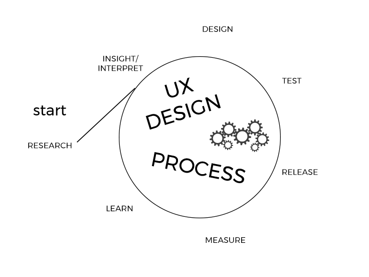

Hi, I'm a freelance UX/UI designer, specialising in websites and web apps.
My approach is
- User-centred
- Empirical and agile
- Beautifully intuitive
- Holistic and empathetic
- Every stage in the design process is informed by the needs or wants of the customer/"user"/human who interacts with your product.
- I do not make assumptions about how the user sees or experiences the world; I hypothesise and I investigate. I strongly believe in the value of obtaining feedback and making observations via testing, then having the agility to incorporate learnings as efficiently and effectively
as possible, within the iterative design process.
- A self-taught coder and artist at heart, I am able to respond intelligently and sensitively to both technological and aesthetic requirements.
- I think about design in terms of crafting a dynamic experience, rather than a static thing, syncing with the user's lifestyle, thoughts, feelings, and sensations. My ultimate aim is to help create something that seamlessly resonates with their identity,
and the way they perceive or experience the world, perhaps sparking a moment of joy.
The iterative design process
A little about me

Still here?
Well-travelled and trilingual (FR, ES, ENG), I am an adventurous truth-seeker, fascinated by cross-cultural theories of human nature (particularly embodiment/extended cognition). Alongside practising design, I have lectured on Interaction and Interface Design at the University for Creative Arts. I also teach yoga in Hackney, on Thursdays and Sundays.
Feel free to bookmark my CV, follow me on GitHub, add me on LinkedIn, or skim my published writings.